Appendix E Answers to Exercises
1 Limits
1.1 Drawing Tangents and a First Limit
1.1.2 Exercises

1.2 Another Limit and Computing Velocity
1.2.2 Exercises
1.2.2.1.
1.2.2.2.
1.2.2.3.
1.2.2.4.
1.2.2.5.
1.2.2.6.
1.3 The Limit of a Function
1.3.2 Exercises
1.3.2.1.
1.3.2.2.
1.3.2.3.
Answer.
-
\(\displaystyle \displaystyle \lim_{x \rightarrow -1^{-}} f(x)=2\)
-
\(\displaystyle \displaystyle \lim_{x \rightarrow -1^{+}} f(x)=-2\)
-
\(\displaystyle \lim_{x \rightarrow -1} f(x)= \) DNE
-
\(\displaystyle \displaystyle \lim_{x \rightarrow -2^{+}} f(x) =0\)
-
\(\displaystyle \displaystyle \lim_{x \rightarrow 2^{-}} f(x)=0\)
1.3.2.4.
1.3.2.5.
1.3.2.6.
1.3.2.7.
1.3.2.8.
1.3.2.9.
1.3.2.10.
1.3.2.11.
1.3.2.12.
1.3.2.13.
1.3.2.14.
1.3.2.15.
1.3.2.16.
1.3.2.17.
1.4 Calculating Limits with Limit Laws
1.4.2 Exercises
1.4.2.1.
1.4.2.2.
1.4.2.3.
1.4.2.4.
1.4.2.5.
1.4.2.6.
1.4.2.7.
1.4.2.8.
1.4.2.9. (✳).
1.4.2.10. (✳).
1.4.2.11. (✳).
1.4.2.12. (✳).
1.4.2.13. (✳).
1.4.2.14. (✳).
1.4.2.15. (✳).
1.4.2.16. (✳).
1.4.2.17. (✳).
1.4.2.18. (✳).
1.4.2.19.
1.4.2.20. (✳).
1.4.2.21. (✳).
1.4.2.22. (✳).
1.4.2.23. (✳).
1.4.2.24. (✳).
1.4.2.25.
1.4.2.26.
1.4.2.27. (✳).
1.4.2.28.
1.4.2.29.
1.4.2.30.
1.4.2.31.
1.4.2.32.
1.4.2.33.
1.4.2.34.
1.4.2.35. (✳).
1.4.2.36. (✳).
1.4.2.37.
1.4.2.38.
1.4.2.39.
1.4.2.40.
1.4.2.41.
1.4.2.42.
1.4.2.43. (✳).
1.4.2.44.
Answer.
-
\(\displaystyle \displaystyle\lim_{x \rightarrow 0} f(x)=0\)
-
\(\displaystyle\lim_{x \rightarrow 0} g(x)=\) DNE
-
\(\displaystyle \displaystyle\lim_{x \rightarrow 0} f(x)g(x)=2\)
-
\(\displaystyle \displaystyle\lim_{x \rightarrow 0} \dfrac{f(x)}{g(x)}=0\)
-
\(\displaystyle \displaystyle\lim_{x \rightarrow 2} f(x)+g(x)=\dfrac{9}{2}\)
-
\(\displaystyle \displaystyle\lim_{x \rightarrow 0} \dfrac{f(x)+1}{g(x+1)}=1\)
1.4.2.45.
1.4.2.46.
Answer.

1.4.2.47.
1.4.2.48.
Answer.
1.4.2.48.a DNE , DNE
1.4.2.48.c No: it is only true when both \(\displaystyle\lim_{x \rightarrow a} f(x)\) and \(\displaystyle\lim_{x \rightarrow a} g(x)\) exist.
1.4.2.49.
Answer.
1.4.2.50.
Answer.
1.5 Limits at Infinity
1.5.2 Exercises
1.5.2.3.
1.5.2.4.
1.5.2.5.
1.5.2.6.
1.5.2.7.
1.5.2.8.
1.5.2.9. (✳).
1.5.2.10. (✳).
1.5.2.11. (✳).
1.5.2.12. (✳).
1.5.2.13. (✳).
1.5.2.14. (✳).
1.5.2.15. (✳).
1.5.2.16.
1.5.2.17. (✳).
1.5.2.18.
1.5.2.19.
1.5.2.20. (✳).
1.5.2.21. (✳).
1.5.2.22. (✳).
1.5.2.23.
1.5.2.24. (✳).
1.5.2.25.
1.5.2.26.
1.5.2.27.
1.5.2.28.
1.6 Continuity
1.6.4 Exercises
1.6.4.1.
1.6.4.2.
1.6.4.3.
Answer.
One example is \(f(x) = \left\{ \begin{array}{ll}
0&\mbox{when }0 \leq x \leq 1\\
2&\mbox{when }1 \lt x \leq 2
\end{array}\right.\text{.}\) The IVT only guarantees \(f(c)=1\) for some \(c\) in \([0,2]\) when \(f\) is continuous over \([0,2]\text{.}\) If \(f\) is not continuous, the IVT says nothing.

1.6.4.4.
1.6.4.5.
1.6.4.6.
1.6.4.7.
1.6.4.8.
1.6.4.9.
1.6.4.10.
1.6.4.11.
1.6.4.12.
1.6.4.13. (✳).
1.6.4.14. (✳).
1.6.4.15. (✳).
1.6.4.16. (✳).
1.6.4.17. (✳).
1.6.4.18. (✳).
1.6.4.19. (✳).
1.6.4.20. (✳).
1.6.4.21.
Answer.
This isn’t the kind of equality that we can just solve; we’ll need a trick, and that trick is the IVT. The general idea is to show that \(\sin x\) is somewhere bigger, and somewhere smaller, than \(x-1\text{.}\) However, since the IVT can only show us that a function is equal to a constant, we need to slightly adjust our language. Showing \(\sin x = x-1\) is equivalent to showing \(\sin x - x + 1 = 0\text{,}\) so let \(f(x)=\sin x - x +1\text{,}\) and let’s show that it has a real root.
First, we need to note that \(f(x)\) is continuous (otherwise we can’t use the IVT). Now, we need to find a value of \(x\) for which it is positive, and for which it’s negative. By checking a few values, we find \(f(0)\) is positive, and \(f(100)\) is negative. So, by the IVT, there exists a value of \(x\) (between \(0\) and \(100\)) for which \(f(x)=0\text{.}\) Therefore, there exists a value of \(x\) for which \(\sin x = x-1\text{.}\)
1.6.4.22. (✳).
Answer.
We let \(f(x)=3^x-x^2\text{.}\) Then \(f(x)\) is a continuous function, since both \(3^x\) and \(x^2\) are continuous for all real numbers.
We want a value \(a\) such that \(f(a) \gt 0\text{.}\) We see that \(a=0\) works since
\begin{equation*}
f(0)=3^0-0=1 \gt 0.
\end{equation*}
We want a value \(b\) such that \(f(b) \lt 0\text{.}\) We see that \(b=-1\) works since
\begin{equation*}
f(-1)=\frac{1}{3}-1 \lt 0.
\end{equation*}
So, because \(f(x)\) is continuous on \((-\infty, \infty)\) and \(f(0) \gt 0\) while \(f(-1) \lt 0\text{,}\) then the Intermediate Value Theorem guarantees the existence of a real number \(c\in (-1,0)\) such that \(f(c)=0\text{.}\)
1.6.4.23. (✳).
Answer.
We let \(f(x)=2\tan(x)-x-1\text{.}\) Then \(f(x)\) is a continuous function on the interval \((-\pi/2, \pi/2)\) since \(\tan(x)=\sin(x)/\cos(x)\) is continuous on this interval, while \(x+1\) is a polynomial and therefore continuous for all real numbers.
We find a value \(a\in (-\pi/2,\pi/2)\) such that \(f(a) \lt 0\text{.}\) We observe immediately that \(a=0\) works since
\begin{equation*}
f(0)=2\tan(0)-0-1=0-1=-1 \lt 0.
\end{equation*}
We find a value \(b\in (-\pi/2, \pi/2)\) such that \(f(b) \gt 0\text{.}\) We see that \(b=\pi/4\) works since
\begin{align*}
f(\pi/4)\amp=2\tan(\pi/4) -\pi/4 - 1=2-\pi/4 - 1=1-\pi/4\\
\amp=(4-\pi)/4 \gt 0
\end{align*}
because \(3 \lt \pi \lt 4\text{.}\)
So, because \(f(x)\) is continuous on \([0,\pi/4]\) and \(f(0) \lt 0\) while \(f(\pi/4) \gt 0\text{,}\) then the Intermediate Value Theorem guarantees the existence of a real number \(c\in (0,\pi/4)\) such that \(f(c)=0\text{.}\)
1.6.4.24. (✳).
Answer.
Let \(f(x) = \sqrt{\cos(\pi x)} - \sin(2\pi x) -1/2\text{.}\) This function is continuous provided \(\cos(\pi x)\geq 0\text{.}\) This is true for \(0 \leq x
\leq \frac{1}{2}\text{.}\)
Now \(f\) takes positive values on \([0,1/2]\text{:}\)
\begin{align*}
f(0) &= \sqrt{\cos(0)} - \sin(0) -1/2 = \sqrt{1} -1/2 = 1/2.
\end{align*}
And \(f\) takes negative values on \([0,1/2]\text{:}\)
\begin{align*}
f(1/2) &= \sqrt{\cos(\pi/2)}-\sin(\pi)-1/2 = 0-0-1/2 = -1/2
\end{align*}
(Notice that \(f(1/3)=(\sqrt{2}-\sqrt{3})/2-1/2\) also works)
So, because \(f(x)\) is continuous on \([0,1/2)\) and \(f(0) \gt 0\) while \(f(1/2) \lt 0\text{,}\) then the Intermediate Value Theorem guarantees the existence of a real number \(c\in (0,1/2)\) such that \(f(c)=0\text{.}\)
1.6.4.25. (✳).
Answer.
We let \(f(x)=\dfrac{1}{\cos^2(\pi x)}-x-\dfrac{3}{2}\text{.}\) Then \(f(x)\) is a continuous function on the interval \((-1/2, 1/2)\) since \(\cos x\) is continuous everywhere and non-zero on that interval.
The function \(f\) takes negative values. For example, when \(x=0\text{:}\)
\begin{align*}
f(0) &= \frac{1}{\cos^2(0)} - 0 - \frac{3}{2} = 1-\frac{3}{2} = -\frac{1}{2} \lt 0.
\end{align*}
It also takes positive values, for instance when \(x=1/4\text{:}\)
\begin{align*}
f(1/4) &= \frac{1}{(\cos \pi/4)^2} - \frac{1}{4} - \frac{3}{2}\\
&= \frac{1}{1/2} - \frac{1+6}{4}\\
&= 2 - 7/4 = 1/4 \gt 0.
\end{align*}
By the IVT there is \(c\text{,}\) \(0 \lt c \lt 1/4\) such that \(f(c)=0\text{,}\) in which case
\begin{gather*}
\dfrac{1}{(\cos\pi c)^2} = c+\dfrac{3}{2}.
\end{gather*}
1.6.4.26.
1.6.4.27.
1.6.4.28.
Answer.
-
If \(f(a)=g(a)\text{,}\) or \(f(b)=g(b)\text{,}\) then we simply take \(c=a\) or \(c=b\text{.}\)
-
Suppose \(f(a) \neq g(a)\) and \(f(b) \neq g(b)\text{.}\) Then \(f(a) \lt g(a)\) and \(g(b) \lt f(b)\text{,}\) so if we define \(h(x)=f(x)-g(x)\text{,}\) then \(h(a) \lt 0\) and \(h(b) \gt 0\text{.}\) Since \(h\) is the difference of two functions that are continuous over \([a,b]\text{,}\) also \(h\) is continuous over \([a,b]\text{.}\) So, by the Intermediate Value Theorem, there exists some \(c \in (a,b)\) with \(h(c)=0\text{;}\) that is, \(f(c)=g(c)\text{.}\)
2 Derivatives
2.1 Revisiting Tangent Lines
2.1.2 Exercises
2.1.2.1.
2.1.2.2.
2.1.2.3.


2.2 Definition of the Derivative
2.2.4 Exercises
2.2.4.1.
2.2.4.2.
2.2.4.3.
2.2.4.4. (✳).
2.2.4.5.
2.2.4.6.
2.2.4.7.
2.2.4.8.
2.2.4.9.
2.2.4.10.
2.2.4.11. (✳).
2.2.4.12. (✳).
2.2.4.13. (✳).
2.2.4.14.
2.2.4.15. (✳).
2.2.4.16. (✳).
2.2.4.17. (✳).
2.2.4.18.
2.2.4.19. (✳).
2.2.4.20. (✳).
2.2.4.21. (✳).
2.2.4.22. (✳).
2.2.4.23.

2.2.4.24.
Answer.
\begin{align*}
p'(x) &= \lim_{h \rightarrow 0} \frac{p(x+h)-p(x)}{h}\\
&= \lim_{h \rightarrow 0} \frac{f(x+h)+g(x+h)-f(x)-g(x)}{h}\\
&= \lim_{h \rightarrow 0} \frac{f(x+h)-f(x)+g(x+h)-g(x)}{h}\\
&= \lim_{h \rightarrow 0}\left[\frac{f(x+h)-f(x)}{h}+
\frac{g(x+h)-g(x)}{h}\right]\\
(*)&= \left[\lim_{h \rightarrow 0} \frac{f(x+h)-f(x)}{h}\right]+ \left[\lim_{h \rightarrow 0}
\frac{g(x+h)-g(x)}{h}\right]\\
&= f'(x)+g'(x)
\end{align*}
At step (\(*\)), we use the limit law that \(\displaystyle\lim_{x \rightarrow a}\left[ F(x)+G(x)\right] = \displaystyle\lim_{x \rightarrow a} F(x)+\displaystyle\lim_{x \rightarrow a}G(x)\text{,}\) as long as \(\displaystyle\lim_{x \rightarrow a} F(x)\) and \(\displaystyle\lim_{x \rightarrow a}G(x)\) exist. Because the problem states that \(f'(x)\) and \(g'(x)\) exist, we know that \(\displaystyle\lim_{h \rightarrow 0} \frac{f(x+h)-f(x)}{h}\) and \(\displaystyle\lim_{h \rightarrow 0}
\frac{g(x+h)-g(x)}{h}\) exist, so our work is valid.
2.2.4.25.
Answer.
2.2.4.26. (✳).
2.2.4.27. (✳).
2.3 Interpretations of the Derivative
2.3.3 Exercises
2.3.3.1.
2.3.3.2.
2.3.3.3.
2.3.3.4.
2.3.3.5.
2.3.3.6.
2.3.3.7.
2.3.3.8.
2.3.3.9.
Answer.
2.4 Arithmetic of Derivatives - a Differentiation Toolbox
2.4.2 Exercises
2.4.2.1.
2.4.2.2.
2.4.2.3.
2.4.2.4.
Answer.
If you’re creative, you can find lots of ways to differentiate!
-
Constant multiple: \(g'(x)=3f'(x)\text{.}\)
-
Product rule: \(g'(x) = \diff{}{x}\{3\}f(x)+3f'(x)=0f(x)+3f'(x)=3f'(x)\text{.}\)
-
Sum rule: \(g'(x)=\diff{}{x}\{f(x)+f(x)+f(x)\}=f'(x)+f'(x)+f'(x)=3f'(x)\text{.}\)
-
Quotient rule: \(g'(x)=\diff{}{x}\left\{\frac{f(x)}{\frac{1}{3}}\right\}= \frac{\frac{1}{3}f'(x)-f(x)(0)}{\frac{1}{9}}=\frac{\frac{1}{3}f'(x)}{\frac{1}{9}}=9\left(\frac{1}{3}\right)f'(x)=3f'(x)\text{.}\)
All rules give \(g'(x)=3f'(x)\text{.}\)
2.4.2.5.
2.4.2.6.
2.4.2.7. (✳).
2.4.2.8. (✳).
2.4.2.9. (✳).
2.4.2.10.
2.4.2.11.
2.4.2.12.
2.4.2.13. (✳).
2.4.2.14. (✳).
2.4.2.15.
2.4.2.16.
2.4.2.17.
Answer.
First expression, \(f(x)=\dfrac{g(x)}{h(x)}\text{:}\)
\begin{align*}
f'(x)&=\frac{h(x)g'(x)-g(x)h'(x)}{h^2(x)}
\end{align*}
Second expresson, \(f(x)=\dfrac{g(x)}{k(x)}\cdot\dfrac{k(x)}{h(x)}\text{:}\)
\begin{align*}
\amp f'(x)=\left(\frac{k(x)g'(x)-g(x)k'(x)}{k^2(x)}\right)\left(\frac{k(x)}{h(x)}\right)\\
\amp\hskip1in+\left(\frac{g(x)}{k(x)}\right)\left(\frac{h(x)k'(x)-k(x)h'(x)}{h^2(x)}\right)\\
&=\frac{k(x)g'(x)-g(x)k'(x)}{k(x)h(x)}+
\frac{g(x)h(x)k'(x)-g(x)k(x)h'(x)}{k(x)h^2(x)}\\
&=\frac{h(x)k(x)g'(x)-h(x)g(x)k'(x)}{k(x)h^2(x)}+
\frac{g(x)h(x)k'(x)-g(x)k(x)h'(x)}{k(x)h^2(x)}\\
&=\frac{h(x)k(x)g'(x)-h(x)g(x)k'(x)+g(x)h(x)k'(x)-g(x)k(x)h'(x)}{k(x)h^2(x)}\\
&=\frac{h(x)k(x)g'(x)-g(x)k(x)h'(x)}{k(x)h^2(x)}\\
&=\frac{h(x)g'(x)-g(x)h'(x)}{h^2(x)}
\end{align*}
and this is exactly what we got from differentiating the first expression.
2.6 Using the Arithmetic of Derivatives – Examples
2.6.2 Exercises
2.6.2.1.
2.6.2.2.
2.6.2.3.
2.6.2.4.
2.6.2.5.
2.6.2.6.
2.6.2.7. (✳).
2.6.2.8.
2.6.2.9.
2.6.2.10. (✳).
2.6.2.11. (✳).
2.6.2.12. (✳).
2.6.2.13. (✳).
Answer.
The derivative of the function is
\begin{align*}
\frac{(1-x^2)\cdot\frac{1}{2\sqrt{x}} - \sqrt{x} \cdot (-2x)}{(1-x^2)^2}
&= \frac{(1-x^2) - 2x \cdot (-2x)}{2\sqrt{x}(1-x^2)^2}
\end{align*}
The derivative is undefined if either \(x \lt 0\) or \(x = 0,\pm 1\) (since the square-root is undefined for \(x \lt 0\) and the denominator is zero when \(x=0,1,-1\text{.}\) Putting this together — the derivative exists for \(x \gt 0, x\neq 1\text{.}\)
2.6.2.14.
2.6.2.15.
2.6.2.16.
2.7 Derivatives of Exponential Functions
2.7.3 Exercises
2.8 Derivatives of Trigonometric Functions
2.8.8 Exercises


2.8.8.3.
2.8.8.4.
2.8.8.5.
2.8.8.6.
2.8.8.7.
2.8.8.8.
2.8.8.9.
2.8.8.10.
2.8.8.11.
2.8.8.12.
2.8.8.13.
2.8.8.14. (✳).
2.8.8.15. (✳).
2.8.8.16. (✳).
2.8.8.17. (✳).
2.8.8.18. (✳).
2.8.8.19.
Answer.
\begin{align*}
\tan \theta &= \dfrac{\sin \theta}{\cos \theta}\\
\end{align*}
So, using the quotient rule,
\begin{align*}
\diff{}{\theta}\{\tan \theta\}&=\frac{\cos\theta\cos\theta-\sin\theta(-\sin\theta)}{\cos^2\theta}
=\frac{\cos^2\theta+\sin^2\theta}{\cos^2\theta}\\
&=\left(\frac{1}{\cos \theta}\right)^2=\sec^2\theta
\end{align*}
2.8.8.20. (✳).
2.8.8.21. (✳).
2.8.8.22. (✳).
Answer.
The function is differentiable whenever \(x^2+x-6\ne 0\) since the derivative equals
\begin{gather*}
\frac{10\cos(x)\cdot (x^2+x-6)-10\sin(x)\cdot (2x+1)}{(x^2+x-6)^2},
\end{gather*}
which is well-defined unless \(x^2+x-6=0\text{.}\) We solve \(x^2+x-6=(x-2)(x+3)=0,\) and get \(x=2\) and \(x=-3\text{.}\) So, the function is differentiable for all real values \(x\) except for \(x=2\) and for \(x=-3\text{.}\)
2.8.8.23. (✳).
Answer.
The function is differentiable whenever \(\sin(x)\ne 0\) since the derivative equals
\begin{gather*}
\frac{\sin(x)\cdot (2x+6) - \cos(x)\cdot (x^2+6x+5)}{(\sin x)^2},
\end{gather*}
which is well-defined unless \(\sin x = 0\text{.}\) This happens when \(x\) is an integer multiple of \(\pi\text{.}\) So, the function is differentiable for all real values \(x\) except \(x=n\pi\text{,}\) where \(n\) is any integer.
2.8.8.24. (✳).
2.8.8.25. (✳).
2.8.8.26.
2.8.8.27.
2.8.8.28. (✳).
2.8.8.29. (✳).
Answer.
2.8.8.30. (✳).
2.9 One More Tool – the Chain Rule
2.9.4 Exercises
2.9.4.3.
2.9.4.4.
2.9.4.5.
2.9.4.6.
2.9.4.7.
2.9.4.8. (✳).
2.9.4.9. (✳).
2.9.4.10. (✳).
2.9.4.11. (✳).
2.9.4.12. (✳).
2.9.4.13. (✳).
2.9.4.14.
2.9.4.15.
2.9.4.16.
2.9.4.17.
2.9.4.18. (✳).
2.9.4.19. (✳).
2.9.4.20. (✳).
2.9.4.21. (✳).
2.9.4.22. (✳).
2.9.4.23. (✳).
2.9.4.24. (✳).
2.9.4.25. (✳).
2.9.4.26. (✳).
2.9.4.27. (✳).
2.9.4.28.
2.9.4.29.
2.9.4.30. (✳).
2.9.4.31.
2.9.4.32. (✳).
Answer.
\(f'(x)=(1+2x)e^{x+x^2}\) and \(g'(x)=1\text{.}\) When \(x \gt 0\text{,}\)
\begin{equation*}
f'(x)=(1+2x)e^{x+x^2} \gt 1\cdot e^{x+x^2}=e^{x+x^2} \gt e^{0+0^2}=1=g'(x).
\end{equation*}
Since \(f(0)=g(0)\text{,}\) and \(f'(x) \gt g'(x)\) for all \(x \gt 0\text{,}\) that means \(f\) and \(g\) start at the same place, but \(f\) always grows faster. Therefore, \(f(x) \gt g(x)\) for all \(x \gt 0\text{.}\)
2.9.4.33.
2.9.4.34.
Answer.
\begin{align*}
f'(x)&=
\frac{1}{3}\left(
\dfrac{ \sqrt{x^3-9} \tan x }{e^{\csc x^2}}
\right)^{\frac{2}{3}}\cdot\\
&\hskip0.3in\frac{e^{\csc x^2} \Big( -2x\sqrt{x^3\!-\!9}\tan x\frac{\cos(x^2)}{\sin^2(x^2)}
-\frac{3x^2\tan x}{2\sqrt{x^3-9}}-\sqrt{x^3\!-\!9}\sec^2 x\Big)}
{(\tan^2 x)(x^3-9) }
\end{align*}
2.9.4.35.
Answer.
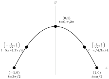
The particle traces the curve \(y=1-x^2\) restricted to domain \([-1,1]\text{.}\) At \(t=0\text{,}\) the particle is at the top of the curve, \((1,0)\text{.}\) Then it moves to the right, and goes back and forth along the curve, repeating its path every \(2\pi\) units of time.
2.10 The Natural Logarithm
2.10.3 Exercises
2.10.3.4.
2.10.3.5.
2.10.3.6.
2.10.3.7.
2.10.3.8. (✳).
2.10.3.9.
2.10.3.10.
2.10.3.11. (✳).
2.10.3.12. (✳).
2.10.3.13. (✳).
2.10.3.14. (✳).
2.10.3.15. (✳).
2.10.3.16.
2.10.3.17.
2.10.3.18. (✳).
2.10.3.19.
2.10.3.20. (✳).
2.10.3.21.
2.10.3.22.
2.10.3.23.
2.10.3.24. (✳).
2.10.3.25. (✳).
2.10.3.26. (✳).
2.10.3.27. (✳).
2.10.3.28. (✳).
2.10.3.29. (✳).
2.10.3.30.
2.10.3.31.
Answer.
In order to show that the two curves have horizontal tangent lines at the same values of \(x\text{,}\) we will show two things: first, that if \(f(x)\) has a horizontal tangent line at some value of \(x\text{,}\) then also \(g(x)\) has a horizontal tangent line at that value of \(x\text{.}\) Second, we will show that if \(g(x)\) has a horizontal tangent line at some value of \(x\text{,}\) then also \(f(x)\) has a horizontal tangent line at that value of \(x\text{.}\)
Suppose \(f(x)\) has a horizontal tangent line where \(x=x_0\) for some point \(x_0\text{.}\) This means \(f'(x_0)=0\text{.}\) Then \(g'(x_0)=\frac{f'(x_0)}{f(x_0)}\text{.}\) Since \(f(x_0) \neq 0\text{,}\) \(\frac{f'(x_0)}{f(x_0)}=\frac{0}{f(x_0)}=0\text{,}\) so \(g(x)\) also has a horizontal tangent line when \(x=x_0\text{.}\) This shows that whenever \(f\) has a horizontal tangent line, \(g\) has one too.
Now suppose \(g(x)\) has a horizontal tangent line where \(x=x_0\) for some point \(x_0\text{.}\) This means \(g'(x_0)=0\text{.}\) Then \(g'(x_0)=\frac{f'(x_0)}{f(x_0)}=0\text{,}\) so \(f'(x_0)\) exists and is equal to zero. Therefore, \(f(x)\) also has a horizontal tangent line when \(x=x_0\text{.}\) This shows that whenever \(g\) has a horizontal tangent line, \(f\) has one too.
2.11 Implicit Differentiation
2.11.2 Exercises
2.11.2.1.
2.11.2.2.
2.11.2.3.
Answer.
(a) no
(b) no \(\ds\diff{y}{x}=-\dfrac{x}{y}\text{.}\) It is not possible to write \(\ds\diff{y}{x}\) as a function of \(x\text{,}\) because (as stated in (b)) one value of \(x\) may give two values of \(\ds\diff{y}{x}\text{.}\) For instance, when \(x=\pi/4\text{,}\) at the point \(\left(\dfrac{\pi}{4},\dfrac{1}{\sqrt{2}}\right)\) the circle has slope \(\ds\diff{y}{x}=-1\text{,}\) while at the point \(\left(\dfrac{\pi}{4},\dfrac{-1}{\sqrt{2}}\right)\) the circle has slope \(\ds\diff{y}{x}=1\text{.}\)
2.11.2.4. (✳).
2.11.2.5. (✳).
2.11.2.6. (✳).
2.11.2.7. (✳).
2.11.2.8. (✳).
2.11.2.9. (✳).
2.11.2.10. (✳).
2.11.2.11.
2.11.2.12. (✳).
2.11.2.13. (✳).
2.12 Inverse Trigonometric Functions
2.12.2 Exercises
2.12.2.1.
2.12.2.2.
2.12.2.3.
Answer.
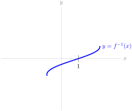
2.12.2.4.
Answer.
-
If \(|a| \gt 1\text{,}\) there is no point where the curve has horizontal tangent line.
-
If \(|a|=1\text{,}\) the curve has a horizontal tangent line where \(x=2\pi n + \dfrac{a\pi}{2}\) for any integer \(n\text{.}\)
-
If \(|a| \lt 1\text{,}\) the curve has a horizontal tangent line where \(x=2\pi n+\arcsin(a)\) or \(x=(2 n +1) \pi - \arcsin (a)\) for any integer \(n\text{.}\)
2.12.2.5.
2.12.2.6.
2.12.2.7.
2.12.2.8.
2.12.2.9.
2.12.2.10.
2.12.2.11.
2.12.2.12.
2.12.2.13. (✳).
2.12.2.14. (✳).
2.12.2.15. (✳).
2.12.2.16.
Answer.
Let \(\theta = \arctan x\text{.}\) Then \(\theta\) is the angle of a right triangle that gives \(\tan \theta = x\text{.}\) In particular, the ratio of the opposite side to the adjacent side is \(x\text{.}\) So, we have a triangle that looks like this:

where the length of the hypotenuse came from the Pythagorean Theorem. Now,
\begin{equation*}
\sin\left(\arctan x\right) = \sin \theta = \frac{\mbox{opp}}{\mbox{hyp}} = \frac{x}{\sqrt{x^2+1}}
\end{equation*}
From here, we differentiate using the quotient rule:
\begin{align*}
\diff{}{x}\left\{\frac{x}{\sqrt{x^2+1}}
\right\}&=
\frac{\sqrt{x^2+1}-x\frac{2x}{2\sqrt{x^2+1}}}{x^2+1}\\
&=\left(\frac{\sqrt{x^2+1}-\frac{x^2}{\sqrt{x^2+1}}}{x^2+1}\right)\cdot\frac{\sqrt{x^2+1}}{\sqrt{x^2+1}}\\
&=\frac{(x^2+1)-x^2}{(x^2+1)^{3/2}}\\
&=\frac{1}{(x^2+1)^{3/2}}=(x^2+1)^{-3/2}
\end{align*}
2.12.2.17.
Answer.
Let \(\theta = \arcsin x\text{.}\) Then \(\theta\) is the angle of a right triangle that gives \(\sin \theta = x\text{.}\) In particular, the ratio of the opposite side to the hypotenuse is \(x\text{.}\) So, we have a triangle that looks like this:

where the length of the adjacent side came from the Pythagorean Theorem. Now,
\begin{equation*}
\cot\left(\arcsin x\right) = \cot \theta = \frac{\mbox{adj}}{\mbox{opp}} = \frac{\sqrt{1-x^2}}{x}
\end{equation*}
From here, we differentiate using the quotient rule:
\begin{align*}
\diff{}{x}\left\{\frac{\sqrt{1-x^2}}{x}
\right\}&=
\frac{x\frac{-2x}{2\sqrt{1-x^2}}-\sqrt{1-x^2}}{x^2}\\
&=\frac{-x^2-(1-x^2)}{x^2\sqrt{1-x^2}}\\
&=\frac{-1}{x^2\sqrt{1-x^2}}
\end{align*}
2.12.2.18. (✳).
2.12.2.19.
2.12.2.20. (✳).
2.12.2.21. (✳).
2.12.2.22. (✳).
2.12.2.23.
2.12.2.24.
Answer.
The function \(\dfrac{1}{\sqrt{x^2-1}}\) exists only for those values of \(x\) with \(x^2-1 \gt 0\text{:}\) that is, the domain of \(\dfrac{1}{\sqrt{x^2-1}}\) is \(|x| \gt 1\text{.}\) However, the domain of arcsine is \(|x| \leq 1\text{.}\) So, there is not one single value of \(x\) where \(\arcsin x\) and \(\dfrac{1}{\sqrt{x^2-1}}\) are both defined.
If the derivative of \(\arcsin(x)\) were given by \(\dfrac{1}{\sqrt{x^2-1}}\text{,}\) then the derivative of \(\arcsin(x)\) would not exist anywhere, so we would probably just write “derivative does not exist,” instead of making up a function with a mismatched domain. Also, the function \(f(x)=\arcsin(x)\) is a smooth curve--its derivative exists at every point strictly inside its domain. (Remember not all curves are like this: for instance, \(g(x)=|x|\) does not have a derivative at \(x=0\text{,}\) but \(x=0\) is strictly inside its domain.) So, it’s a pretty good bet that the derivative of arcsine is not \(\dfrac{1}{\sqrt{x^2-1}}\text{.}\)
2.12.2.25.
2.12.2.26.
2.12.2.27.
2.12.2.28.
2.13 The Mean Value Theorem
2.13.5 Exercises
2.13.5.1.
2.13.5.2.
2.13.5.3.
2.13.5.4.
Answer.
One possible answer: \(f(x) = \left\{\begin{array}{lr}
0&x \neq 10\\
10&x=10
\end{array}\right.\)
Another answer: \(f(x) = \left\{\begin{array}{lr}
10&x \neq 0\\
0&x=0
\end{array}\right.\)
Yet another answer: \(f(x) = \left\{\begin{array}{ll}
5&x \neq 0, 10\\
10&x= 10\\
0&x=0
\end{array}\right.\)
2.13.5.5.


2.13.5.6.
Answer.
The function \(f(x)\) is continuous over all real numbers, but it is only differentiable when \(x \neq 0\text{.}\) So, if we want to apply the MVT, our interval must consist of only positive numbers or only negative numbers: the interval \((-4,13)\) is not valid.
It is possible to use the mean value theorem to prove what we want: if \(a=1\) and \(b=144\text{,}\) then \(f(x)\) is differentiable over the interval \((1,144)\) (since 0 is not contained in that interval), and \(f(x)\) is continuous everywhere, so by the mean value theorem there exists some point \(c\) where \(f'(x)=\dfrac{\sqrt{|144|}-\sqrt{|1|}}{144-1}=\dfrac{11}{143}=\dfrac{1}{13}\text{.}\)
That being said, an easier way to prove that a point exists is to simply find it--without using the MVT. When \(x \gt 0\text{,}\) \(f(x)=\sqrt{x}\text{,}\) so \(f'(x)=\dfrac{1}{2\sqrt {x}}\text{.}\) Then \(f'\left(\dfrac{169}{4}\right)=\dfrac{1}{13}\text{.}\)
2.13.5.7. (✳).
2.13.5.8. (✳).
2.13.5.9. (✳).
Answer.
We note that \(f(0)=f(2\pi)=\sqrt{3} + \pi^2\text{.}\) Then using the Mean Value Theorem (note that the function is differentiable for all real numbers since \(3+\sin x \gt 0\)), we get that there exists \(c\in (0,2\pi)\) such that
\begin{equation*}
f'(c)=\frac{f(2\pi)- f(0)}{2\pi - 0} = 0.
\end{equation*}
2.13.5.10. (✳).
2.13.5.11.
2.13.5.12.
2.13.5.13.
2.13.5.14.
2.13.5.15. (✳).
Answer.
\begin{equation*}
f'(x)=15x^4-30x^2+15=15\big(x^4-2x^2+1\big)=15\big(x^2-1\big)^2\ge 0
\end{equation*}
The derivative is nonnegative everywhere. The only values of \(x\) for which \(f'(x)=0\) are \(1\) and \(-1\text{,}\) so \(f'(x) \gt 0\) for every \(x\) in \((-1,1)\text{.}\)
2.13.5.15.b If \(f(x)\) has two roots \(a\) and \(b\) in \([-1,1]\text{,}\) then by Rolle’s Theorem, \(f'(c)=0\) for some \(x\) strictly between \(a\) and \(b\text{.}\) But since \(a\) and \(b\) are in \([-1,1]\text{,}\) and \(c\) is between \(a\) and \(b\text{,}\) that means \(c\) is in \((-1,1)\text{;}\) however, we know for every \(c\) in \((-1,1)\text{,}\) \(f'(c) \gt 0\text{,}\) so this can’t happen. Therefore, \(f(x)\) does not have two roots \(a\) and \(b\) in \([-1,1]\text{.}\) This means \(f(x)\) has at most one root in \([-1,1]\text{.}\)
2.13.5.16. (✳).
2.13.5.17.
2.13.5.18. (✳).
Answer.
Since \(e^{-f(x)}\) is always positive (regardless of the value of \(f(x)\)),
\begin{equation*}
f'(x)=\dfrac{1}{1+e^{-f(x)}} \lt \dfrac{1}{1+0}=1
\end{equation*}
for every \(x\text{.}\)
Since \(f'(x)\) exists for every \(x\text{,}\) we see that \(f\) is differentiable, so the Mean Value Theorem applies. If \(f(100)\) is greater than or equal to 100, then by the Mean Value Theorem, there would have to be some \(c\) between \(0\) and \(100\) such that
\begin{equation*}
f'(c) = \frac{f(100)-f(0)}{100}\geq\frac{100}{100}= 1
\end{equation*}
Since \(f'(x) \leq 1\) for every \(x\text{,}\) there is no value of \(c\) as described. Therefore, it is not possible that \(f(100) \geq 100\text{.}\) So, \(f(100) \lt 100\text{.}\)
2.13.5.19.
2.13.5.20.
2.13.5.21.
Answer.
Define \(h(x)=f(x)-g(x)\text{,}\) and notice \(h(a)=f(a)-g(a) \lt 0\) and \(h(b)=f(b)-g(b) \gt 0\text{.}\) Since \(h\) is the difference of two functions that are continuous over \([a,b]\) and differentiable over \((a,b)\text{,}\) also \(h\) is continuous over \([a,b]\) and differentiable over \((a,b)\text{.}\) So, by the Mean Value Theorem, there exists some \(c \in (a,b)\) with
\begin{equation*}
h'(c)=\frac{h(b)-h(a)}{b-a}
\end{equation*}
Since \((a,b)\) is an interval, \(b \gt a\text{,}\) so the denominator of the above expression is positive; since \(h(b) \gt 0 \gt h(a)\text{,}\) also the numerator of the above expression is positive. So, \(h'(c) \gt 0\) for some \(c \in (a,b)\text{.}\) Since \(h'(c)=f'(c)-g'(c)\text{,}\) we conclude \(f'(c) \gt g'(c)\) for some \(c \in (a,b)\text{.}\)
2.13.5.22.
2.13.5.23.
2.14 Higher Order Derivatives
2.14.2 Exercises
2.14.2.1.
2.14.2.2.
Answer.
2.14.2.3.
2.14.2.4.
Answer.
The derivative \(\ds\diff{y}{x}\) is \(\dfrac{11}{4}\) only at the point \((1,3)\text{:}\) it is not constantly \(\dfrac{11}{4}\text{,}\) so it is wrong to differentiate the constant \(\dfrac{11}{4}\) to find \(\ds\ddiff{2}{y}{x}\text{.}\) Below is a correct solution.
\begin{align*}
-28x+2y+2xy'+2yy'&=0\\
\end{align*}
Plugging in \(x=1\text{,}\) \(y=3\text{:}\)
\begin{align*}
-28+6+2y'+6y'&=0\\
y'&=\frac{11}{4} \quad\text{at the point $(1,3)$}\\
\end{align*}
Differentiating the equation \(-28x+2y+2xy'+2yy'=0\text{:}\)
\begin{align*}
-28+2y'+2y'+2xy''+2y'y'+2yy''&=0\\
4y'+2(y')^2+2xy''+2yy''&=28\\
\end{align*}
At the point \((1,3)\text{,}\) \(y'=\dfrac{11}{4}\text{.}\) Plugging in:
\begin{align*}
4\left(\frac{11}{4}\right)+2\left(\frac{11}{4}\right)^2+2(1)y''+2(3)y''&=28\\
y''&=\frac{15}{64}
\end{align*}
2.14.2.5.
2.14.2.6.
2.14.2.7.
2.14.2.8.
2.14.2.9.
2.14.2.10.
2.14.2.11.
2.14.2.12.
2.14.2.13.
2.14.2.14.
2.14.2.15.
2.14.2.16.
2.14.2.17. (✳).
Answer.
-
2.14.2.17.c \(f\) and \(h\) “start at the same place”, since \(f(0)=h(0)\text{.}\) Also \(f'(0)=h'(0)\text{,}\) and \(f''(x)=(4x^2+4x+3)e^{x+x^2} \gt 3e^{x+x^2} \gt 3=h''(x)\) when \(x \gt 0\text{.}\) Since \(f'(0)=h'(0)\text{,}\) and since \(f'\) grows faster than \(h'\) for positive \(x\text{,}\) we conclude \(f'(x) \gt h'(x)\) for all positive \(x\text{.}\) Now we can conclude that (since \(f(0)=h(0)\) and \(f\) grows faster than \(h\) when \(x \gt 0\)) also \(f(x) \gt h(x)\) for all positive \(x\text{.}\)
2.14.2.18. (✳).
2.14.2.19.
Answer.
-
2.14.2.19.a \(g''(x)=[f(x)+2f'(x)+f''(x)]e^x\)
-
2.14.2.19.b \(g'''(x)=[f(x)+3f'(x)+3f''(x)+f'''(x)]e^x\)
-
2.14.2.19.c \(g^{(4)}(x)=[f(x)+4f'(x)+6f''(x)+4f'''(x)+f^{(4)}(x)]e^x\)
2.14.2.20.
2.14.2.21.
2.14.2.22. (✳).
Answer.
2.14.2.22.a In order to make \(f(x)\) a little more tractable, let’s change the format. Since \(|x|=\left\{\begin{array}{rl}
x&x \geq 0\\
-x&x \lt 0
\end{array}\right.\text{,}\) then:
\begin{equation*}
f(x)=\left\{\begin{array}{rl}
-x^2&x \lt 0\\
x^2&x\ge 0.\end{array}
\right.
\end{equation*}
Now, we turn to the definition of the derivative to figure out whether \(f'(0)\) exists.
\begin{align*}
f'(0)&=\lim_{h \to 0} \frac{f(0+h)-f(0)}{h}=\lim_{h \to 0}\frac{f(h)-0}{h} =\lim_{h \to 0}\frac{f(h)}{h}\qquad\mbox{if it exists.}\\
\end{align*}
Since \(f\) looks different to the left and right of 0, in order to evaluate this limit, we look at the corresponding one-sided limits. Note that when \(h\) approaches 0 from the right, \(h \gt 0\) so \(f(h)=h^2\text{.}\) By contrast, when \(h\) approaches 0 from the left, \(h \lt 0\) so \(f(h)=-h^2\text{.}\)
\begin{align*}
& \lim_{h \to 0^+} \frac{f(h)}{h}=\lim_{h \to 0^+}\frac{h^2}{h}=\lim_{h \to 0^+}h=0\\
& \lim_{h \to 0^-} \frac{f(h)}{h}=\lim_{h \to 0^-}\frac{-h^2}{h}=\lim_{h \to 0^-}-h=0\\
\end{align*}
Since both one-sided limits exist and are equal to 0,
\begin{align*}
& \lim_{h \to 0} \frac{f(0+h)-f(0)}{h}=0
\end{align*}
and so \(f\) is differentiable at \(x=0\) and \(f'(0)=0\text{.}\)
\begin{equation*}
f(x)=\left\{\begin{array}{rl}
-x^2&x \lt 0\\
x^2&x\ge 0.\end{array}
\right.
\end{equation*}
So,
\begin{equation*}
f'(x)=\left\{\begin{array}{rl}
-2x&x \lt 0\\
2x&x\ge 0.\end{array}
\right.
\end{equation*}
Then, we know the second derivative of \(f\) everywhere except at \(x=0\text{:}\)
\begin{equation*}
f''(x)=\left\{\begin{array}{cc}
-2&x \lt 0\\
??&x=0\\
2&x \gt 0.\end{array}
\right.
\end{equation*}
So, whenever \(x \neq 0\text{,}\) \(f''(x)\) exists. To investigate the differentiability of \(f'(x)\) when \(x=0\text{,}\) again we turn to the definition of a derivative. If
\begin{align*}
&\lim_{h \to 0}\frac{f'(0+h)-f'(0)}{h}\\
\end{align*}
exists, then \(f''(0)\) exists.
\begin{align*}
\lim_{h \to 0}\frac{f'(0+h)-f'(0)}{h}&=\lim_{h \to 0} \frac{f'(h)-0}{h}=\lim_{h \to 0}\frac{f'(h)}{h}\\
\end{align*}
Since \(f(h)\) behaves differently when \(h\) is greater than or less than zero, we look at the one-sided limits.
\begin{align*}
\lim_{h \to 0^+}\frac{f'(h)}{h}&=\lim_{h \to 0^+}\frac{2h}{h}=2\\
\lim_{h \to 0^-}\frac{f'(h)}{h}&=\lim_{h \to 0^-}\frac{-2h}{h}=-2\\
\end{align*}
Since the one-sided limits do not agree,
\begin{align*}
\lim_{h \to 0}\frac{f'(0+h)-f'(0)}{h}&=DNE
\end{align*}
So, \(f''(0)\) does not exist. Now we have a complete picture of \(f''(x)\text{:}\)
\begin{equation*}
f''(x)=\left\{\begin{array}{ll}
-2&x \lt 0\\
DNE&x=0\\
2&x \gt 0.
\end{array}\right.
\end{equation*}
3 Applications of derivatives
3.1 Velocity and Acceleration
3.1.2 Exercises
3.1.2.1.
3.1.2.2.
3.1.2.3.
3.1.2.4.
3.1.2.5.
3.1.2.6.
3.1.2.7.
3.1.2.8.
3.1.2.9.
3.1.2.10.
3.1.2.11.
3.1.2.12.
3.1.2.13.
3.1.2.14.
3.1.2.15.
3.2 Related Rates
3.2.2 Exercises
3.2.2.2. (✳).
3.2.2.3. (✳).
3.2.2.4. (✳).
3.2.2.5. (✳).
3.2.2.6. (✳).
3.2.2.7. (✳).
3.2.2.8. (✳).
3.2.2.9. (✳).
3.2.2.10.
3.2.2.11.
3.2.2.12.
3.2.2.13. (✳).
Answer.
3.2.2.14.
3.2.2.15. (✳).
3.2.2.16.
3.2.2.17.
3.2.2.18.
3.2.2.19.
3.2.2.20.
3.2.2.21.
3.2.2.22.
3.2.2.23.
Answer.
(a) \(10\pi=\pi\left[3(a+b)-\sqrt{(a+3b)(3a+b)}\right]\) or equivalently, \(10=3(a+b)-\sqrt{(a+3b)(3a+b)}\)
(b) \(20\pi a b\)
(c) The water is spilling out at about 375.4 cubic centimetres per second. The exact amount is \(-\dfrac{200\pi}{9-\sqrt{35}}\left(1-2\left(\dfrac{3\sqrt{35}-11}{3\sqrt{35}-13}\right)\right)\;\dfrac{\mathrm{cm}^3}{\mathrm{sec}}\text{.}\)
3.2.2.24.
3.3 Exponential Growth and Decay — a First Look at Differential Equations
3.3.4 Exercises
Exercises for § 3.3.1
3.3.4.1.
3.3.4.2.
3.3.4.3.
3.3.4.4. (✳).
3.3.4.5. (✳).
3.3.4.6.
3.3.4.7.
3.3.4.8. (✳).
3.3.4.9.
Exercises for § 3.3.2
3.3.4.1.
3.3.4.2.
3.3.4.3.
3.3.4.4.
3.3.4.7. (✳).
3.3.4.8. (✳).
3.3.4.9.
Exercises for § 3.3.3
Further problems for § 3.3
3.3.4.1. (✳).
3.3.4.2.
3.3.4.3. (✳).
3.3.4.4.
3.3.4.5. (✳).
3.3.4.6. (✳).
3.3.4.7. (✳).
3.3.4.8. (✳).
3.4 Approximating Functions Near a Specified Point — Taylor Polynomials
3.4.11 Exercises
Exercises for § 3.4.1
3.4.11.1.
Answer.
Since \(f(0)\) is closer to \(g(0)\) than it is to \(h(0)\text{,}\) you would probably want to estimate \(f(0) \approx g(0)=1+2\sin (1)\) if you had the means to efficiently figure out what \(\sin(1)\) is, and if you were concerned with accuracy. If you had a calculator, you could use this estimation. Also, later in this chapter we will learn methods of approximating \(\sin (1)\) that do not require a calculator, but they do require time.
Without a calculator, or without a lot of time, using \(f(0)\approx h(0)=0.7\) probably makes the most sense. It isn’t as accurate as \(f(0) \approx g(0)\text{,}\) but you get an estimate very quickly, without worrying about figuring out what \(\sin(1)\) is.

Exercises for § 3.4.2
Exercises for § 3.4.3
3.4.11.3.
3.4.11.4.
3.4.11.5.
3.4.11.6.
3.4.11.7.
Answer.
3.4.11.8.
Answer.
For each of these, there are many solutions. We provide some below.
-
\(\displaystyle 1+2+3+4+5 = \ds\sum_{n=1}^5n\)
-
\(\displaystyle 2+4+6+8=\ds\sum_{n=1}^42n\)
-
\(\displaystyle 3+5+7+9+11=\ds\sum_{n=1}^{5}(2n+1)\)
-
\(\displaystyle 9+16+25+36+49=\ds\sum_{n=3}^7 n^2\)
-
\(\displaystyle 9+4+16+5+25+6+36+7+49+8=\ds\sum_{n=3}^7 (n^2+n+1)\)
-
\(\displaystyle 8+15+24+35+48= \ds\sum_{n=3}^7 (n^2-1)\)
-
\(\displaystyle 3-6+9-12+15-18=\ds\sum_{n=1}^6 (-1)^{n+1}3n\)
Exercises for § 3.4.4
Exercises for § 3.4.5
3.4.11.1.
Answer.
\begin{align*}
T_{16}(x)&=1\textcolor{blue}{+}x
\textcolor{red}{-}\frac{1}{2}x^2
\textcolor{red}{-}\frac{1}{3!}x^3
\textcolor{blue}{+}\frac{1}{4!}x^4
\textcolor{blue}{+}\frac{1}{5!}x^5
\textcolor{red}{-}\frac{1}{6!}x^6
\textcolor{red}{-}\frac{1}{7!}x^7
\textcolor{blue}{+}\frac{1}{8!}x^8
\textcolor{blue}{+}\frac{1}{9!}x^9\\
\amp\qquad\textcolor{red}{-}\frac{1}{10!}x^{10}
\textcolor{red}{-}\frac{1}{11!}x^{11}
\textcolor{blue}{+}\frac{1}{12!}x^{12}
\textcolor{blue}{+}\frac{1}{13!}x^{13}
\textcolor{red}{-}\frac{1}{14!}x^{14}
\textcolor{red}{-}\frac{1}{15!}x^{15}\\
&\qquad\textcolor{blue}{+}\frac{1}{16!}x^{16}
\end{align*}
3.4.11.2.
3.4.11.3.
3.4.11.4.
3.4.11.5.
3.4.11.6.
3.4.11.7.
3.4.11.8.
3.4.11.9.
3.4.11.10.
3.4.11.11.
Exercises for § 3.4.6
3.4.11.1.
Answer.

3.4.11.2.
Exercises for § 3.4.7
3.4.11.4.
3.4.11.5.
3.4.11.6.
Exercises for § 3.4.8
3.4.11.1.
3.4.11.2.
3.4.11.3.
3.4.11.4.
3.4.11.5.
3.4.11.6.
3.4.11.7.
3.4.11.8.
3.4.11.9.
3.4.11.10.
Answer.
Using Equation 3.4.33,
\begin{align*}
\left|f\left(\frac{1}{2}\right)-T_2\left(\frac{1}{2}\right)\right|& \lt \frac{1}{10}.\\
\end{align*}
The actual error is
\begin{align*}
\left|f\left(\frac{1}{2}\right)-T_2\left(\frac{1}{2}\right)\right|&= \frac{\pi}{6}-\frac{1}{2}
\end{align*}
which is about 0.02.
3.4.11.11.
3.4.11.12.
3.4.11.13.
Answer.
If we’re going to use Equation 3.4.33, then we’ll probably be taking a Taylor polynomial. Using Example 3.4.16, the 6th order Maclaurin polynomial for \(\sin x\) is
\begin{equation*}
T_6(x)=T_5(x)=x-\frac{x^3}{3!}+\frac{x^5}{5!}
\end{equation*}
so let’s play with this a bit. Equation 3.4.33 tells us that the error will depend on the seventh derivative of \(f(x)\text{,}\) which is \(-\cos x\text{:}\)
\begin{align*}
f(1)-T_6(1)&=f^{(7)}(c)\frac{1^7}{7!}\\
\sin(1)-\left(1-\frac{1}{3!}+\frac{1}{5!}\right)&=\frac{-\cos c}{7!}\\
\sin(1)-\frac{101}{5!}&=\frac{-\cos c}{7!}\\
\sin(1)&=\frac{4242-\cos c}{7!}\\
\end{align*}
for some \(c\) between 0 and 1. Since \(-1 \leq \cos c \leq 1\text{,}\)
\begin{align*}
\frac{4242-1}{7!}\leq \sin(1)&\leq \frac{4242+1}{7!}\\
\frac{4241}{7!}\leq \sin(1)&\leq \frac{4243}{7!}\\
\frac{4241}{5040}\leq \sin(1)&\leq \frac{4243}{5040}
\end{align*}
Remark: there are lots of ways to play with this idea to get better estimates. One way is to take a higher order Maclaurin polynomial. Another is to note that, since \(0 \lt c \lt 1 \lt \dfrac{\pi}{3}\text{,}\) then \(\dfrac{1}{2} \lt \cos c \lt 1\text{,}\) so
\begin{gather*}
\dfrac{4242-1}{7!} \lt \sin(1) \lt \dfrac{4242-\frac{1}{2}}{7!}\\
\dfrac{4241}{5040} \lt \sin(1) \lt \dfrac{8483}{10080} \lt \frac{4243}{5040}
\end{gather*}
If you got tighter bounds than asked for in the problem, congratulations!
3.4.11.14.
Further problems for § 3.4
3.4.11.4. (✳).
3.4.11.5. (✳).
3.4.11.6. (✳).
3.4.11.7. (✳).
3.4.11.8. (✳).
3.4.11.9. (✳).
3.4.11.10. (✳).
3.4.11.11. (✳).
3.4.11.12. (✳).
3.4.11.13. (✳).
3.4.11.14. (✳).
Answer.
-
By Equation 3.4.33, the absolute value of the error is\begin{equation*} \left|\frac{f'''(c)}{3!}\cdot (2-1)^3\right| = \left|\frac{c}{6(22-c^2)}\right| \end{equation*}for some \(c \in (1,2)\text{.}\)
-
When \(1\leq c\leq2\text{,}\) we know that \(18 \leq 22-c^2 \leq 21\text{,}\) and that numerator and denominator are non-negative, so\begin{align*} \left|\frac{c}{6(22-c^2)}\right| &=\frac{c}{6(22-c^2)} \leq \frac{2}{6(22-c^2)} \leq \frac{2}{6\cdot 18}\\ & = \frac{1}{54} \leq \frac{1}{50} \end{align*}as required.
-
Alternatively, notice that \(c\) is an increasing function of \(c\text{,}\) while \(22-c^2\) is a decreasing function of \(c\text{.}\) Hence the fraction is an increasing function of \(c\) and takes its largest value at \(c=2\text{.}\) Hence\begin{align*} \left|\frac{c}{6(22-c^2)}\right| & \leq \frac{2}{6\times 18} = \frac{1}{54} \leq \frac{1}{50}. \end{align*}
3.4.11.15. (✳).
Answer.
-
By Equation 3.4.33, there is \(c\in(0,0.5)\) such that the error is\begin{align*} R_4 &= \frac{f^{(4)}(c)}{4!} (0.5-0)^4\\ &= \frac{1}{24\cdot 16} \cdot \frac{\cos(c^2)}{3-c} \end{align*}
-
For any \(c\) we have \(|\cos(c^2)| \leq 1\text{,}\) and for \(c \lt 0.5\) we have \(3-c \gt 2.5\text{,}\) so that\begin{equation*} \left|\frac{\cos(c^2)}{3-c}\right| \leq \frac{1}{2.5}\,. \end{equation*}
-
We conclude that\begin{equation*} \left| R_4 \right| \leq \frac{1}{2.5\cdot 24\cdot 16} = \frac{1}{60\cdot 16} \lt \frac{1}{60\cdot 10}=\frac{1}{600} \lt \frac{1}{500} \end{equation*}
3.4.11.16. (✳).
Answer.
-
By Equation 3.4.33, there is \(c\in(0,1)\) such that the error is\begin{align*} \left|\frac{f'''(c)}{3!}\cdot (1-0)^3\right| &= \left|\frac{e^{-c}}{6(8+c^2)}\right|. \end{align*}
-
When \(0 \lt c \lt 1\text{,}\) we know that \(1 \gt e^{-c} \gt e^{-1}\) and \(8 \leq 8+c^2 \lt 9\text{,}\) so\begin{align*} \left|\frac{e^{-c}}{6(8+c^2)}\right| &=\frac{e^{-c}}{6(8+c^2)}\\ & \lt \frac{1}{6 |8+c^2|}\\ & \lt \frac{1}{6\times 8} = \frac{1}{48} \lt \frac{1}{40} \end{align*}as required.
3.4.11.17. (✳).
Answer.
3.4.11.18.
3.4.11.19. (✳).
Answer.
3.4.11.20. (✳).
Answer.
3.4.11.21. (✳).
3.4.11.22. (✳).
Answer.
(a) \(L(x)=e+ex\)
(b) \(Q(x)=e+ex+ex^2\)
From the error formula, we know that
\begin{align*}
f(x)&=f(0)+f'(0)x+\half f''(0)x^2
+\dfrac{1}{3!}f'''(c)x^{3}\\
&=Q(x)+\frac{1}{6}\left(e^c+3e^{2c}+e^{3c}\right)e^{e^c}x^3
\end{align*}
for some \(c\) between \(0\) and \(x\text{.}\) Since \(\frac{1}{6}\left(e^c+3e^{2c}+e^{3c}\right)e^{e^c}\) is positive for any \(c\text{,}\) for all \(x \gt 0\text{,}\) \(\frac{1}{6}\left(e^c+3e^{2c}+e^{3c}\right)e^{e^c}x^3 \gt 0\text{,}\) so \(Q(x) \lt f(x)\text{.}\)
(d) \(1.105 \lt e^{0.1} \lt 1.115\)
3.5 Optimisation
3.5.4 Exercises
Exercises for § 3.5.1
3.5.4.1.
3.5.4.2.
Answer.
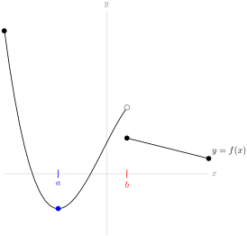
The \(x\)-coordinate corresponding to the blue dot (let’s call it \(a\)) is a critical point, and \(f(x)\) has a local and global minimum at \(x=a\text{.}\) The \(x\)-coordinate corresponding to the discontinuity (let’s call it \(b\)) is a singular point, but there is not a global or local extremum at \(x=b\text{.}\)
3.5.4.3.

3.5.4.5.
Answer.
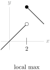
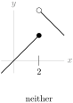

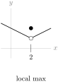
3.5.4.6.
3.5.4.7.
3.5.4.8.
Exercises for § 3.5.2
Exercises for § 3.5.3
3.5.4.1. (✳).
3.5.4.2. (✳).
3.5.4.3. (✳).
3.5.4.4. (✳).
3.5.4.5. (✳).
3.5.4.6. (✳).
3.5.4.7. (✳).
3.5.4.8. (✳).
3.5.4.9. (✳).
3.5.4.10. (✳).
3.5.4.11. (✳).
3.5.4.12. (✳).
3.5.4.13. (✳).
3.5.4.14. (✳).
Answer.
3.5.4.15. (✳).
3.6 Sketching Graphs
3.6.7 Exercises
Exercises for § 3.6.1
3.6.7.2.
3.6.7.3.
3.6.7.4.
3.6.7.5.
Exercises for § 3.6.2
Exercises for § 3.6.3
3.6.7.5. (✳).
Answer.
Let
\begin{equation*}
g(x)=f''(x)=x^3+5x-20.
\end{equation*}
Then \(g'(x)=3x^2+5\text{,}\) which is always positive. That means \(g(x)\) is strictly increasing for all \(x\text{.}\) So, \(g(x)\) can change signs once, from negative to positive, but it can never change back to negative. An inflection point of \(f(x)\) occurs when \(g(x)\) changes signs. So, \(f(x)\) has at most one inflection point.
Since \(g(x)\) is continuous, we can apply the Intermediate Value Theorem to it. Notice \(g(3) \gt 0\) while \(g(0) \lt 0\text{.}\) By the IVT, \(g(x)=0\) for at least one \(x \in (0,3)\text{.}\) Since \(g(x)\) is strictly increasing, at the point where \(g(x)=0\text{,}\) \(g(x)\) changes from negative to positive. So, the concavity of \(f(x)\) changes. Therefore, \(f(x)\) has at least one inflection point.
Now that we’ve shown that \(f(x)\) has at most one inflection point, and at least one inflection point, we conclude it has exactly one inflection point.
3.6.7.6. (✳).
Answer.
Then \(f''(x)\) is the derivative of \(g(x)\text{.}\) Since \(f''(x) \gt 0\) for all \(x\text{,}\) \(g(x)=f'(x)\) is strictly increasing for all \(x\text{.}\) In other words, if \(y \gt x\) then \(g(y) \gt g(x)\text{.}\)
Suppose \(g(x)=0\text{.}\) Then for every \(y\) that is larger than \(x\text{,}\) \(g(y) \gt g(x)\text{,}\) so \(g(y) \neq 0\text{.}\) Similarly, for every \(y\) that is smaller than \(x\text{,}\) \(g(y) \lt g(x)\text{,}\) so \(g(y) \neq 0\text{.}\) Therefore, \(g(x)\) can only be zero for at most one value of \(x\text{.}\) Since \(g(x)=f'(x)\text{,}\) that means \(f(x)\) can have at most one critical point.
Suppose \(f'(c)=0\text{.}\) Since \(f'(x)\) is a strictly increasing function, \(f'(x) \lt 0\) for all \(x \lt c\) and \(f'(x) \gt 0\) for all \(x \gt c\text{.}\)

Then \(f(x)\) is decreasing for \(x \lt c\) and increasing for \(x \gt c\text{.}\) So \(f(x) \gt f(c)\) for all \(x\neq c\text{.}\)
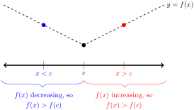
Since \(f(x) \gt f(c)\) for all \(x\ne c\text{,}\) so \(c\) is an absolute minimum for \(f(x)\text{.}\)
3.6.7.6.b We know that the maximum over an interval occurs at an endpoint, a critical point, or a singular point.
-
Since \(f'(x)\) exists everywhere, there are no singular points.
-
If the maximum were achieved at a critical point, that critical point would have to provide both the absolute maximum and the absolute minimum (by part (a)). So, the function would have to be a constant and consequently could not have a nonzero second derivative. So the maximum is not at a critical point.
That leaves only the endpoints of the interval.
3.6.7.7.
Answer.
If \(x=3\) is an inflection point, then the concavity of \(f(x)\) changes at \(x=3\text{.}\) That is, there is some interval strictly containing 3, with endpoints \(a\) and \(b\text{,}\) such that
-
\(f''(a) \lt 0\) and \(f''(x) \lt 0\) for every \(x\) between \(a\) and 3, and
-
\(f''(b) \gt 0\) and \(f''(x) \gt 0\) for every \(x\) between \(b\) and 3.
Since \(f''(a) \lt 0\) and \(f''(b) \gt 0\text{,}\) and since \(f''(x)\) is continuous, the Intermediate Value Theorem tells us that there exists some \(x\) strictly between \(a\) and \(b\) with \(f''(x)=0\text{.}\) So, we know \(f''(x)=0\) somewhere between \(a\) and \(b\text{.}\) The question is, where exactly could that be?
-
\(f''(x) \lt 0\) (and hence \(f''(x) \neq 0\)) for all \(x\) between \(a\) and 3
-
\(f''(x) \gt 0\) (and hence \(f''(x) \neq 0\)) for all \(x\) between \(b\) and 3
-
So, any number between \(a\) and \(b\) that is not 3 has \(f''(x)\neq 0\text{.}\)
So, \(x=3\) is the only possible place between \(a\) and \(b\) where \(f''(x)\) could be zero. Therefore, \(f''(3)=0\text{.}\)
Exercises for § 3.6.4
3.6.7.5.
3.6.7.6.
Answer.
3.6.7.7.
3.6.7.8.
3.6.7.9.
Exercises for § 3.6.6
3.6.7.1. (✳).
Answer.
3.6.7.1.b \(f(x)\) in increasing on \((-\infty,2)\) and decreasing on \((2,3)\text{.}\) There is a local maximum at \(x=2\) and a local minimum at the endpoint \(x=3\text{.}\)
3.6.7.2. (✳).
3.6.7.3. (✳).
3.6.7.4. (✳).
Answer.
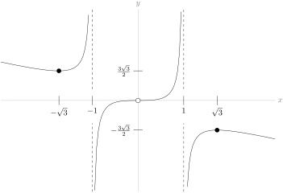
3.6.7.5. (✳).
Answer.
3.6.7.5.a One branch of the function, the exponential function \(e^x\text{,}\) is continuous everywhere. So \(f(x)\) is continuous for \(x \lt 0\text{.}\) When \(x \geq 0\text{,}\) \(f(x)=\dfrac{x^2+3}{3(x+1)}\text{,}\) which is continuous whenever \(x \neq -1\) (so it’s continuous for all \(x \gt 0\)). So, \(f(x)\) is continuous for \(x \gt 0\text{.}\) To see that \(f(x)\) is continuous at \(x=0\text{,}\) we see:
\begin{align*}
\lim_{x\rightarrow0-}f(x)=\lim_{x\rightarrow0-}e^x&=1\\
\lim_{x\rightarrow0+}f(x)=\lim_{x\rightarrow0+}\frac{x^2+3}{3(x+1)}&=1\\
\mbox{So, } \lim_{x \rightarrow 0}f(x)&=1=f(0)
\end{align*}
Hence \(f(x)\) is continuous at \(x=0\text{,}\) so \(f(x)\) is continuous everywhere.
-
i. \(f(x)\) is increasing for \(x \lt 0\) and \(x \gt 1\text{,}\) decreasing for \(0 \lt x \lt 1\text{,}\) has a local max at \((0,1)\text{,}\) and has a local min at \(\left(1,\frac{2}{3}\right)\text{.}\)
-
ii. \(f(x)\) is concave upwards for all \(x\ne 0\text{.}\)
-
iii. The \(x\)--axis is a horizontal asymptote as \(x\rightarrow-\infty\text{.}\)
3.6.7.6. (✳).
Answer.
3.6.7.7. (✳).
Answer.
-
Increasing: \((-1,1)\text{,}\) decreasing: \((-\infty,-1)\cup (1,\infty)\)
-
concave up: \((-\sqrt{3},0) \cup (\sqrt{3},\infty)\text{,}\) concave down: \((-\infty,-\sqrt{3}) \cup (0 ,\sqrt{3})\)
-
inflection points: \(x=\pm\sqrt{3}, 0\)
3.6.7.7.b The local and global minimum of \(f(x)\) is at \((-1,\frac{-1}{\sqrt{e}})\text{,}\) and the local and global maximum of \(f(x)\) is at \((1,\frac{1}{\sqrt{e}})\text{.}\)

3.6.7.8.
3.6.7.9. (✳).
Answer.
Below is the graph \(y=f(x)\) over the interval \([-\pi,\pi]\text{.}\) The sketch of the curve over a larger domain is simply a repetition of this figure.

On the interval \([0,\pi]\text{,}\) the maximum value of \(f(x)\) is \(6\) and the minimum value is \(-2\text{.}\)
Let \(a=\arcsin \left(\dfrac{-1+\sqrt{33}}{8}\right)\approx 0.635\approx0.2\pi\) and \(b=\arcsin \left(\dfrac{-1-\sqrt{33}}{8}\right)\approx -1.003\approx -0.3\pi\). The points \(-\pi-b\), \(b\), \(a\), and \(\pi-a\) are inflection points.
3.6.7.10.
3.6.7.11. (✳).
Answer.
-
3.6.7.11.a decreasing for \(x \lt 0\) and \(x \gt 2\text{,}\) increasing for \(0 \lt x \lt 2\text{,}\) minimum at \((0,0)\text{,}\) maximum at \((2,2)\text{.}\)
-
3.6.7.11.b concave up for \(x \lt 2-\sqrt{2}\) and \(x \gt 2+\sqrt{2}\text{,}\) concave down for \(2-\sqrt 2 \lt x \lt 2+\sqrt 2\text{,}\) inflection points at \(x = 2\pm \sqrt{2}\text{.}\)
-
3.6.7.11.c\(\infty\)
Open dots indicate inflection points, and closed dots indicate local extrema.
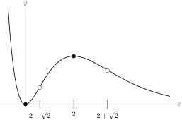
3.6.7.12. (✳).
Answer.
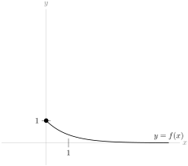
There are no inflection points or extrema, except the endpoint \((0,1)\text{.}\)
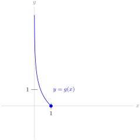
There are no inflection points or extrema, except the endpoint \((1,0)\text{.}\)
3.6.7.13. (✳).
Answer.
(a)

Local maximum at \(x=-\frac{1}{\sqrt[4]{5}}\text{;}\) local minimum at \(x=\frac{1}{\sqrt[4]{5}}\text{;}\) inflection point at the origin; concave down for \(x\lt 0\) ; concave up for \(x\gt 0\text{.}\)
(b) The number of distinct real roots of \(x^5-x+k\) is:
-
1 when \(|k| \gt \dfrac{4}{5\root{4}\of{5}}\)
-
2 when \(|k|=\dfrac{4}{5\root{4}\of{5}}\)
-
3 when \(|k| \lt \dfrac{4}{5\root{4}\of{5}}\)
3.6.7.14. (✳).
Answer.
(a)
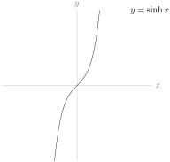
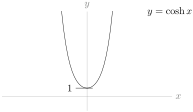
(b) For any real \(x\text{,}\) define \(\sinh^{-1}(x)\) to be the unique solution of \(\sinh(y)=x\text{.}\) For every \(x\in[1,\infty)\text{,}\) define \(\cosh^{-1}(x)\) to be the unique \(y\in[0,\infty)\) that obeys \(\cosh(y)=x\text{.}\)
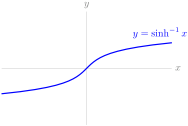
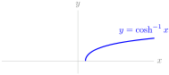
(c) \(\ds\diff{}{x}\{\cosh^{-1}(x)\}=\dfrac{1}{\sqrt{x^2-1}}\)
3.7 L’Hôpital’s Rule, Indeterminate Forms
3.7.4 Exercises
3.7.4.1.
3.7.4.2.
3.7.4.3.
3.7.4.4. (✳).
3.7.4.5. (✳).
3.7.4.6. (✳).
3.7.4.7. (✳).
3.7.4.8. (✳).
3.7.4.9.
3.7.4.10. (✳).
3.7.4.11. (✳).
3.7.4.12.
3.7.4.13.
3.7.4.14.
3.7.4.15. (✳).
3.7.4.16. (✳).
3.7.4.17. (✳).
3.7.4.18. (✳).
3.7.4.19.
3.7.4.20.
3.7.4.21.
3.7.4.22.
3.7.4.23. (✳).
3.7.4.24. (✳).
3.7.4.25.
Answer.
-
We want to find the limit as \(n\) goes to infinity of the percentage error, \(\ds\lim_{n \rightarrow \infty} 100\frac{|S(n)-A(n)|}{|S(n)|}\text{.}\) Since \(A(n)\) is a nicer function than \(S(n)\text{,}\) let’s simplify: \(\ds\lim_{n \rightarrow \infty} 100\frac{|S(n)-A(n)|}{|S(n)|} = 100\left|1-\ds\lim_{n \to \infty}\frac{A(n)}{S(n)}\right|\text{.}\)We figure out this limit the natural way:\begin{align*} 100\left|1-\ds\lim_{n \to \infty}\frac{A(n)}{S(n)}\right|&= 100\left|1-\ds\lim_{n \rightarrow \infty}\underbrace{\frac{5n^4}{5n^4-13n^3-4n+\log (n)}}_{\atp {\mathrm{num}\to\infty} {\mathrm{den}\to\infty}}\right|\\ &= 100\left|1-\ds\lim_{n \rightarrow \infty}\frac{20n^3}{20n^3-39n^2-4+\frac{1}{n}}\right|\\ &= 100\left|1-\ds\lim_{n \rightarrow \infty}\frac{n^3}{n^3}\cdot\frac{20}{20-\frac{39}{n}-\frac{4}{n^3}+\frac{1}{n^4}}\right|\\ &=100|1-1|=0 \end{align*}So, as \(n\) gets larger and larger, the relative error in the approximation gets closer and closer to 0.
-
Now, let’s look at the absolute error.\begin{align*} \lim_{n \rightarrow \infty} \left| S(n)-A(n)\right|&=\lim_{n \rightarrow \infty} |-13n^3-4n+\log n|=\infty \end{align*}So although the error gets small relative to the giant numbers we’re talking about, the absolute error grows without bound.